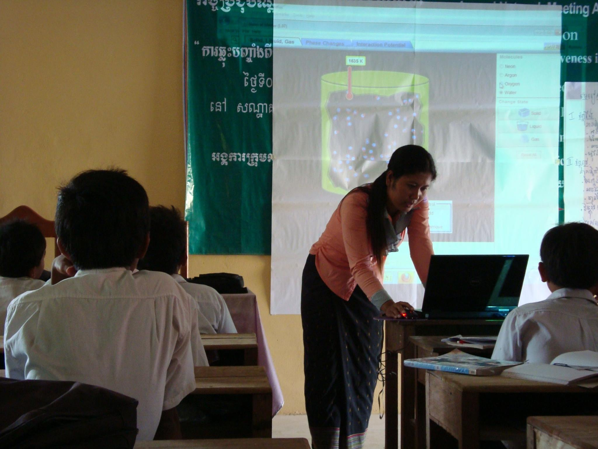
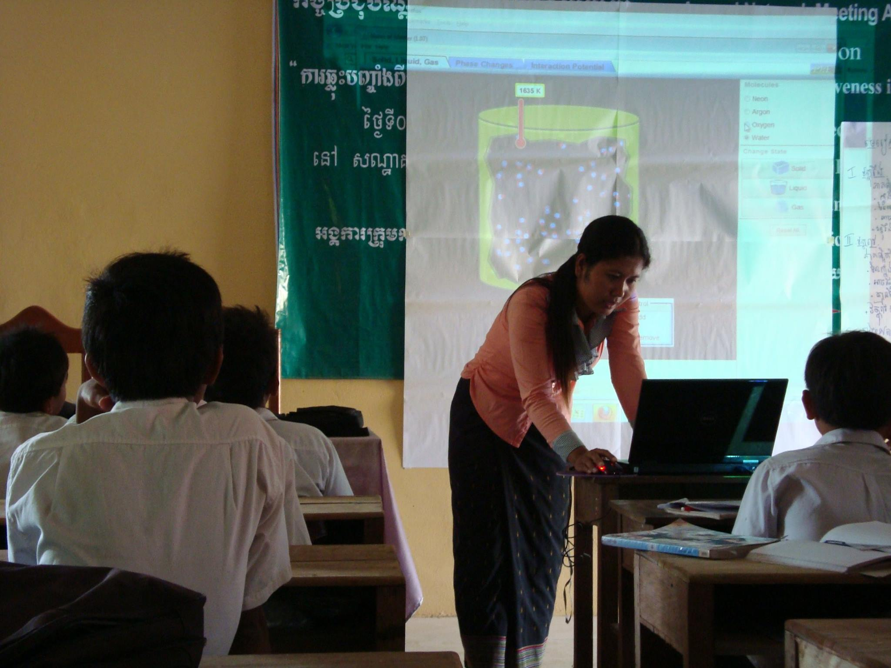

Experimentation
Labs & demonstrations
- Ideal for exploring & experimenting

- Not available all the time
- Pose a range of access issues for students with disabilities

Courtesy of Allison Shelley/The Verbatim Agency for American Education: Images of Teachers and Students in Action. For more information about acceptable uses and licensing terms visit https://creativecommons.org/licenses/by-nc/4.0/.
Interactive Science Simulations
- Are more readily available
- Do not require special equipment
- Create a safe lab-like exploratory experience
- Support student learning (D’Angelo et 2014)
- Allow students to experiment & discover
- Help students to think about science
Images courtesy PhET's facebook page.
 


PhET Interactive Simulations

- Started in 2002
- 170 science & math simulations
- Run 100 Million+ times/year
- 87 languages
- Flexible & exploratory
- Used with a diverse age range
- Free of cost & openly licensed
/